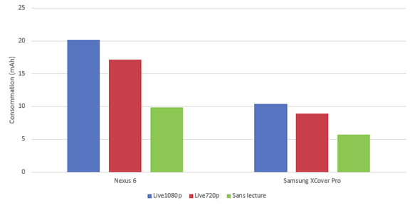
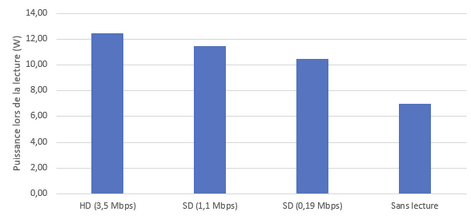
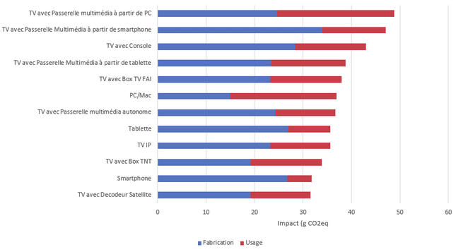
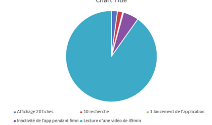

Introduction

Cette étude a été réalisée par Greenspector, société spécialisée dans l’impact du numérique, et EVEA, spécialisée dans les analyses de l’impact environnemental de produit. Cette étude se base sur :
- une méthodologie de calcul initiée dans le cadre du projet CONVINcE sur la consommation d’énergie de la vidéo. Projet ayant impliqué plusieurs acteurs tels que Orange, Sony…
- des mesures d’énergie et de consommation de ressource réalisée sur l’application myCANAL pour étayer des hypothèses
- une collecte de données sur l’usage et l’infrastructure de Canal+
- une étude bibliographique pour identifier et corréler des facteurs d’émission et des consommations d’énergie
Sommaire de l’étude :
– Méthodologie
– Résultats : consommations, impact global et projection
– Axes d’améliorations
– Conclusion – points à retenir
– Témoignage du Chief Digital Officer de Canal+
Méthodologie
L’unité fonctionnelle de cette étude est définie telle que suit : “Visionner 1h de vidéo, en live ou en replay, sur les interfaces de Canal+”.
Disclaimer : Cette étude a pour but d’estimer, par des ordres de grandeur, l’impact carbone de la lecture d’une vidéo sur les interfaces de Canal+. À date, elle s’appuie sur des sources fiables et robustes et se veut représentative de la réalité de l’infrastructure de Canal+. Cependant, ce n’est pas une Analyse du Cycle de Vie (ACV) complète. Nous nous appuyons sur les méthodologies ACV mais nous n’avons par exemple pas effectué d’analyse de sensibilité qui permettrait d’avoir des écarts min-max sur les valeurs. Cependant, cette étude a permis de formaliser un référentiel d’analyse pour l’empreinte carbone d’un service de vidéo, et il pourra servir pour suivre l’évolution de l’empreinte carbone dans le temps. Et tout ceci n’enlève en rien à la cohérence des données pour son utilisation principale.
Moyen d’accès aux services
Nous avons listé les différentes manières d’accéder aux services vidéo de myCANAL. En fonction de ce type d’accès, il est nécessaire d’avoir plus ou moins de matériel(s). Cet inventaire est nécessaire pour évaluer l’impact de l’accès aux services de vidéo. Nous avons classé les moyens par catégorie :
- Décodeur Canal+
- Box TV FAI
- Box TNT
- Console de jeux
- TV IP (TV Android, Samsung TV)
- Passerelle Multimédia PC/Mac avec Box Internet FAI
- Smartphone/Tablette avec Box Internet FAI ou accès GSM
Pour les accès Décodeur, Box TV/TNT, Console et Passerelle Multimedia il est nécessaire d’ajouter une TV. Nous avons écarté tous les cas particuliers de visualisation considérés comme anecdotiques par rapport aux autres accès tels que :
- L’affichage du flux PC sur une TV,
- La visualisation multiroom
Concernant le lien entre les terminaux et les Box, nous considérerons que la connexion Wifi et la connexion filaire (Ethernet) n’ont pas d’impact sur la consommation des terminaux (PC et TV).
Définition de la visualisation
La qualité de visualisation influence la consommation d’énergie de bout en bout. Nous avons pris les 3 principales définitions suivantes :
- SD (Simple Définition)
- HD (Haute Définition)
- UHD/4K (Ultra Haute Définition)
La définition dépend de 3 facteurs :
- la disponibilité de programme compatible
- la compatibilité du matériel en termes de qualité
- la qualité de la connexion (la qualité des vidéos myCANAL est adaptée en fonction de la vitesse de connexion).
Les mesures exploratoires de Greenspector sur myCanal permettent de montrer l’impact de la consommation d’une vidéo SD, HD ou UHD sur smartphone puis sur PC portable :


Des sources bibliographiques ont été utilisées pour les consommations des autres plateformes comme les Consoles (Source 1), les TV (Sources 1 et 2), les Set-Top-Box (Sources 1 et 2). Les consommations des décodeurs Canal+ fournies par Canal+ ont été aussi utilisées.
Selon les différentes configurations d’équipement, nous obtenons des consommations d’énergie qui varient de 1,3 à 108 Wh/h soit un ratio de 1 à 80 :

Technologies
Plusieurs paramètres ont été pris en compte dans les calculs car ils influent sur la consommation :
- Technologie de streaming : IPTV (Technologie chez les FAI), OTT (Over the Top) et Peer To Peer
- Signal Linéaire (Live) ou Non linéaire (Replay/VOD)
- Diffusion (Hertzien, Satellite, IP)
Moyens de connexion au réseau
Pour accéder aux services, l’infrastructure considérée prend en compte : le matériel chez l’utilisateur (Box entre autres), l’accès aux réseaux (GSM, Fibre…) et le cœur du réseau IP.
Nous avons utilisé des méthodes de calculs répandues dans la littérature scientifique et standardisées par l’ETSI. Le principe est de prendre un ratio « énergie/usage type » en Wh/Go. Bien que l’infrastructure du réseau ait une consommation assez fixe et ne dépendant pas de l’usage, ce mode de calcul permet d’affecter un impact global à un usage (ici une heure de vidéo). De plus, il permet d’étudier l’amélioration des réseaux en termes d’efficience. Au-delà de la recherche d’amélioration de l’efficacité énergétique, il permet aussi d’évaluer une pression sur le réseau et de prendre en compte l’amélioration capacitaire de l’infrastructure.
Ainsi expliqué dans le rapport CONVINcE :
« As we are looking for an order of magnitude in energy saving, we suppose that decreasing by 30% the traffic volume in the core network induces a decrease of same ratio in network dimensioning and consequently a decrease of 30% in energy consumption in the core IP network. »
Nous avons étudié la littérature et répertorié des métriques allant de 1,3Wh/Go (chiffre pour la fibre FTTH) à 600Wh/Go. Ces facteurs fluctuent en fonction de la date d’évaluation de l’infrastructure, de la méthode (Top Down ou Bottom Up) et de la technologie. Il est clair cependant que l’efficacité s’améliore au cours des années.

Nous avons pris :
- 13 Wh/Go pour le cœur réseau (source CONVINcE)
- 30 à 40 Wh/Go pour le réseau Fixe
- 150 Wh/Go pour le réseau GSM (source CONVINcE)
Pour la TNT et le satellite, il existe peu de données. Nous nous sommes cependant basés sur une étude BBC pour la TNT.
Content Delivery Network
Les Content Delivery Network (CDN) sont des serveurs utilisés pour limiter la charge des serveurs « Haut de Têtes » (servant les vidéos) et pour fournir un flux au plus proche de l’utilisateur. Canal+ passe par des fournisseurs CDN du marché mais utilise aussi ses propres infrastructures.
La méthodologie pour estimer l’intensité d’énergie par GB est de ramener la consommation estimée du data center au débit en période de pics. Canal+ connaît en effet le nombre de serveurs physiques, leurs types ainsi que leurs débits. Les serveurs étant hébergés chez un hébergeur, certaines hypothèses ont été faites pour estimer la consommation réelle : entre autres, une hypothèse de PUE (Power Usage Effectiveness) de 2, une consommation par serveur de 250W, une charge serveur de 50%. La consommation des routeurs et du stockage sont considérées négligeables par rapport à la consommation des serveurs. (Sources 1, 2 et 3)
L’intensité d’énergie obtenue est de 0,13 Wh/Go, avec une valeur différente entre la VOD et le Live. A noter que cette valeur est calculée en cas de pic (match de foot par exemple). Elle peut être plus faible (usage de la capacité totale du datacenter) ou plus forte (en période de faible affluence).
Faute de données, l’hypothèse d’une même intensité d’énergie (Wh/Go) a été prise pour les CDN extérieurs à Canal+ (50%). Pour comparaison et vérification, les études listées affichent des valeurs de 0,04 à 1 Wh/Go. Ces différences s’expliquent par différents facteurs :
– Amélioration de l’efficience des data centers, les études anciennes amènent donc à des chiffres plus élevés,
– Approches Top-Down qui ont une estimation plus élevée que les études Bottom-Up (comme la présente estimation sur les CDN).

Serveurs applicatifs AWS Hors vidéo : l’utilisation Mycanal (présentation du catalogue, authentification…) et le visionnage des vidéos impliquent la sollicitation de services hébergés sur des serveurs (gestion des droits, etc). Les API utilisées sont hébergées sur des instances AWS.
Canal+ loue des instances AWS et connaît le nombre de VMs. Une partie de ces VMs est purement dédiée à fournir les services annexes à la vidéo.
Il est difficile de connaître la consommation d’énergie des instances AWS car aucune communication ou information n’est fournie par Amazon. À dire d’expert, nous avons pris une valeur de 20W (en prenant en compte un PUE de 2) (Source : Interview des experts sur la virtualisation de la société Easyvirt).
Nous avons pris l’hypothèse d’une répartition uniforme de la consommation par rapport au nombre d’heures visualisées et nous obtenons une valeur de 0,14 Wh/h.
Serveurs d’encodage Vidéo
Les serveurs « Tête de réseau » permettent de mettre en forme les vidéos, de les « paquetiser » au format de l’utilisateur… Pour l’OTT, jusqu’à 150 paquets peuvent être disponibles pour une même vidéo. Voici le workflow pour l’OTT.

Les parties les plus consommatrices sont l’encodage et le décodage vidéo. Le workflow se répartit sur des serveurs spécifiques (pour l’encodage) et des serveurs classiques (pour la mise en forme et le packaging).
Nous avons pris les chiffres issus du projet CONVINcE (considérant des serveurs Harmony identiques à ceux utilisés par Canal+) pour estimer l’énergie, ainsi que les données serveurs de Canal+ :
- Pour l’IPTV : 0,09 Wh pour une heure de vidéo
- Pour l’OTT: 0,30 Wh pour une heure de vidéo
Cette différence s’explique par le fait que l’OTT est encodé en plusieurs formats contrairement à l’IPTV qui est encodé en un format haute définition.
Facteurs d’émission CO²
Pour l’énergie nous avons utilisé les valeurs fournies par la base Open Data Réseaux Energies (Travail des distributeurs tels RTE ainsi que l’ADEME). Nous avons utilisé l‘usage intermittent qui correspond davantage à l‘usage vidéo en termes de période (le soir) soit 60g CO2eq/kWh. Une partie d’émissions pour le reste du monde a été ajoutée en prenant en compte le fait que certains utilisateurs sont hors de France.
Pour les facteurs d’émission de la fabrication des terminaux et des serveurs, nous avons utilisé les facteurs fournis par Shift Project / IEA.
Ces facteurs ont été ramenés à l’heure de visualisation en prenant en compte des durées de vie associées à chaque matériel.
Note : Concernant les impacts de la TNT et du satellite, il manque des données sur l’infrastructure et les facteurs d’émission. Nous avons intégré cependant cette partie pour comprendre les ordres de grandeur des impacts. Certaines analyses ont été réalisées uniquement sur la partie IP dans certains cas (pour comparaison avec les autres études par exemple).
De la même manière, l’impact de la phase de fabrication du data center en dehors des serveurs et de l’infrastructure réseau n’a pas été prise en compte car considérée comme mutualisée et faible compte tenu de la durée de vie des bâtiments.
Résultats – projection globale
L’alimentation en énergie renouvelable des infrastructures AWS et des CDN Canal+ hébergées par Interxion n’a pas été prise en compte.
En une heure, en moyenne, voici les flux qui transitent sur le réseau :
| 500 000 heures de vidéo |
| 900 To de données |
| 3,6 Go/h de débit moyen |
Le nombre d’heures de visualisation des abonnés Canal+ a été réparti en fonction des paramètres listés précédemment.
Les données unitaires obtenues précédemment sont alors projetées sur ces usages pour avoir la consommation globale. En prenant ces résultats, nous pouvons obtenir des intensités d’usage de chaque partie (Terminal, Réseau, Serveur) pour vérifier la cohérence de la consommation globale.

Analyse des intensités
Les intensités d’usage obtenues peuvent être comparées aux études Shift Project et IEA. Cette intensité est calculée en prenant la répartition des devices, l’usage de Canal+ et en ne gardant que la partie transfert IP (sans Satellite ni TNT).

Il est clair (et partagé par l’IEA) que l’étude du Shift Project surestime la consommation du réseau. Pour les serveurs, nous avons une valeur assez faible mais sommes assez confiants compte tenu du fait qu’elle se base sur les données d’une infrastructure connue (avec l’incertitude issue des serveurs Amazon et des CDN tiers). L’estimation de la partie terminale du Shift Project nous semble avoir été sous-estimée (partagé par IEA). Il semble que l’IEA ait aussi sous-estimé de nombreux paramètres et semble ne pas avoir été pris en compte l’influence de la définition sur la consommation du terminal, certains éléments comme les box et la consommation des nouvelles TV plus consommatrices. L’étude CONVINcE et l’analyse Sauber/Koomey permettent aussi de valider la cohérence de notre étude.
Impact de la lecture d’une heure de vidéo
Sur l’ensemble du parc Canal+, la moyenne de consommation de bout en bout est de 214 Wh par heure de vidéo. Pour comparaison, l’étude IEA annonce une consommation entre 120 et 240Wh par heure. La répartition est la suivante :

L’impact en équivalent CO2 moyen par type d’accès est le suivant (avec les hypothèses précisées dans le paragraphe Facteurs d’émission CO2 où la fabrication des infrastructures Satellite, TNT, réseau et d’hébergement des serveurs n’a pas été prise en compte)

En prenant le type de connexion :

L‘impact va de 20 à 66g EqCO2, il dépend de plusieurs paramètres :
- la consommation plus ou moins importante en énergie du device (par exemple Smartphone vs TV),
- l’énergie grise et la durée de vie du matériel,
- le moyen d’accès au réseau (par exemple un accès GSM est plus impactant qu’un accès filaire),
- la qualité de visionnage qui va influer surtout sur la part du réseau (fonction d’un coût au Wh/Go),
- le nombre de matériels pour accéder au service.
En prenant les usages réels (voir fin du document), on arrive à une moyenne de 28g CO2eq. Si l’on prend uniquement la partie IP, nous arrivons à une valeur moyenne de 37g CO2eq.
Pour comparaison, l’étude IEA (2020) annonce 8g CO2eq pour la France (sur la phase d’usage uniquement). Une autre étude pour les US (2014) annonce 360g CO2eq sur la phase d’usage (et 420g CO2eq avec la fabrication). Si l’on prend un mix énergétique US, nous obtenons 202g ce qui nous rapproche de cette étude. La valeur plus faible peut s’expliquer par les différences d’hypothèses, en particulier sur l’intensité énergétique du réseau. Par exemple, si on prend pour notre étude une TV avec réception 4K, IEA annonce 20g CO2eq alors que nous estimons plutôt 14g (37g avec la phase de fabrication).
Si on regarde le ratio usage/fabrication, dans certains cas, l’usage a plus d’impact (UHD en particulier), alors que dans d’autres c’est la fabrication (TV IP ou PC en HD par exemple).
Sur cette même étude, l’estimation de l’achat d’un DVD est de 400g EqCO2, ce qui amène donc à l’impact d’un visionnage d’une vidéo de 2 heures. 5 fois moindre que celle de l’achat d’un DVD en France et équivalent aux US.
Consommation et impact global
Le résultat de la consommation totale d’énergie du visionnage des vidéos Canal+ par IP est de 900 GWh par an avec un impact en gaz à effet de serre de 159000 tonnes CO2eq.
Pour comparaison, la consommation annuelle française est de 473 TWh par an (Source RTE) et l’empreinte carbone 2017 de la France (émissions nationales + imports) de 749 Mt eq CO2 (source : Haut Conseil pour le Climat – rapport 2019). La consommation du parc Canal+ par IP est donc de 0,18% de la consommation d’énergie et 0,016% de l’empreinte carbone française.
La répartition de bout en bout est la suivante :

Le plus gros de la consommation est chez l’utilisateur (terminal et une partie de l’accès réseau). En effet, il est nécessaire d’avoir du matériel (TV, Box, Smartphone…) qui n’est pas mutualisé comme les serveurs.
Pour validation de la cohérence de cette projection, nous avons pris la consommation des CDN propres à CANAL ainsi que des fournisseurs. Nous avons une consommation des CDN Canal+ de 2,6 GWh (et estimée à 7GWh pour les fournisseurs) hors head-end vidéo qui ne sont pas chez Interxion. Nous obtenons 12 GWh avec la projection, ce qui valide le modèle.
Si on regarde la répartition de l’impact en gaz à effet de serre, nous avons la répartition suivante :

Une grosse partie de l’impact provient de la fabrication des terminaux utilisateurs. Sur la partie réseau, la fabrication des Box (FAI, Satellite…) a, elle aussi, un impact non négligeable.
Axes d’améliorations pour limiter l’impact des services
Stratégie générale
Nous l’avons vu dans la partie réseau, l’efficience s’améliore. Il en est de même pour les terminaux. Mais d’autre part, la 4K va se généraliser, les réseaux vont continuer d’augmenter leur capacité et donc augmenter l’impact global de la consommation. En prenant une des hypothèses d’amélioration de 30% de l’efficience du réseau (Selon les tendances énoncées dans les études listées dans la partie Réseaux de ce rapport) et d’une augmentation du débit moyen de 20% sur 3 ans ainsi que de 20% des heures visionnées, ainsi qu’un transfert de 75% des heures visionnées de toutes les interfaces vers celle de l’OTT, nous estimons une augmentation de l’énergie consommée de 39% et de l’impact des gaz à effet de serre de 23%. Cette projection simpliste permet de s’approcher d’une consommation plus réaliste dans 3 ans.
Pour compenser cette augmentation, et optimiser l’impact de la lecture vidéo, nous avons examiné l’impact des chantiers suivants menés par Canal+ :
- Passage d’un encodage H264 à HEVC
- Passage au multicast pour le live
- Passer l’encodage audio AAC en AC4
- Renforcer le downsizing du bitrate
- Améliorer l’interface et la couche logicielle
- Aider l’utilisateur sur son impact numérique
Ces chantiers ne sont pas exhaustifs. D’autres axes de progression possibles ont été identifiés qui pourront être lancés ultérieurement par Canal+.
Les mesures, estimations et modélisations qui nous ont permis d’obtenir l’impact global ont été utilisées pour chiffrer les gains estimés.
Note sur l’optimisation des serveurs vidéo :
La consommation d’énergie des serveurs vidéo est très faible, leur impact aussi, le matériel ayant une durée de vie élevée (10 ans). Plusieurs optimisations sont en cours d’études (passage en vidéo Just-in-Time entre autres). Cependant ces optimisations n’apportent que très peu de gain de bout en bout. Elles sont cependant nécessaires pour optimiser la gestion et réduire la taille de stockage (impact non pris en compte dans cette étude car faible). Des optimisations comme le passage en HEVC ont en effet un impact plus fort (ceci est confirmé par l’étude CONVINcE).
“The “Just In Time Transcoding” approach will allow to reduce the number of video representations stored in the CDN and thus its power consumption. This is an end-to-end approach to be compared to the global abovementioned one consisting in reducing the bandwidth of the network by using a most efficient encoding technology (HEVC/AVC).
Sur les CDN de la même manière, même si l’impact est faible, certaines actions comme l’augmentation du taux d’usage des infrastructures Canal+ (via un transfert des flux des CDN fournisseurs vers les CDN propres) va permettre d’améliorer l’efficience.
Passage d’un encodage H264 à HEVC
Le codec vidéo HEVC est environ 20% plus efficace que le H264, et de très nombreux équipements sont maintenant compatibles. Pour une projection à 3 ans des consommations, nous avons pris une augmentation de la part de marché des devices (Box, Smartphone…) compatibles HEVC.
Pour les utilisateurs qui sont sur le 1080p 5Mbits à date (34% des utilisateurs actuellement) comme pour les utilisateurs bridés à 720p pour raison technique (par exemple une limitation du réseau), une baisse de 20% de la consommation est attendue. Pour les autres utilisateurs compatibles 1080p, il n’y a pas de baisse de consommation, mais une augmentation de qualité avec une accroche de qualité supérieure.
Un nouveau format encore plus efficace commence à apparaitre (AV1), faisant gagner 20% supplémentaire. Cependant, de très rares équipements sont compatibles : la transition est largement prématurée, on ne gagnerait quasiment rien à date car le parc est quasi nul.
Passage au multicast pour le live
La diffusion en adaptative streaming hybride multicast/unicast pour l’OTT permettra de réduire très fortement l’utilisation de bande passante, et donc la consommation électrique.
Utilisable uniquement pour le live, elle permet de s’assurer qu’un unique stream est envoyé pour l’ensemble des clients jusqu’au point de livraison final. Ce chantier sera accompagné d’autres chantiers annexes comme le passage en packaging CMAF. Le format de packaging audio/vidéo CMAF permet d’avoir exactement les mêmes fichiers vidéo pour l’ensemble des plateformes.
Passer l’encodage audio AAC en AC4
Actuellement nous utilisons principalement de l’audio AAC, de 96kbits à 128kbits.
Le EAC3+ est à date largement compatible, et améliore la qualité audio à débit équivalent, tout en permettant le 5.1. Le passage en EAC3+ serait à débit fixe, sans espérer économiser de la bande passante (alors que 20% plus efficace que EAC3+).
En revanche le nouveau format AC4 est 50% plus efficace que le EAC3+, et permettrait de diviser par 2 le débit audio. Même si la part de vidéo est plus importante, les gains au niveau global ne sont pas négligeables.
Renforcer le downsizing du bitrate
À date, hormis en Afrique, ou en réseau cellulaire (pour ne pas vider l’abonnement du client), la qualité de la vidéo est adaptée. Sur PC, l’adaptation de la qualité est possible mais l’accès n’est pas forcément simple.
Rendre plus accessible la possibilité de réduire la taille par différents moyens (amélioration de l’interface, communication…) permettrait de rediriger une partie des utilisateurs vers une qualité moindre mais suffisante.
Compte tenu de l’augmentation des qualités vidéo et de celle de la performance des réseaux, le caping de la qualité par les utilisateurs des services Canal+ devrait représenter dans 3 ans un gain de 20% du débit moyen par rapport à celui qui est généré par un usage déplafonné.
Dans cet axe, plusieurs éléments n’ont pas été mis dans la projection de gain mais sont possibles pour aider l’utilisateur dans son impact. Par exemple les mesures Greenspector sur mobile montrent qu’il est préférable (dans des conditions favorables comme le wifi) d’utiliser le téléchargement plutôt que le streaming. En effet, voici la comparaison pour une vidéo de 45mn (avec 5mn de téléchargement) :

Ceci s’explique en partie par le fait que lors de la visualisation de la vidéo téléchargée, la cellule radio n’est pas sollicitée alors qu’elle l’est beaucoup plus lors du streaming.
Améliorer l’interface et la couche logicielle
Une partie de l’impact de la visualisation d’une heure de vidéo provient de l’interface. En effet, visualiser le catalogue, gérer les abonnements (via des API), traiter les playlists… sont des fonctions nécessaires. Les mesures Greenspector ont montrées que cela pouvait représenter 10% de la consommation des terminaux :

Améliorer l’interface sur toutes les plateformes (smartphone, PC…) permettrait donc d’obtenir des gains non négligeables. Il permettrait aussi au-delà de la réduction de l’impact de limiter l’exclusion de certaines personnes ainsi que l’obsolescence des plateformes.
Parmi les actions identifiées :
- Passage en dark mode
- Réduire l’impact globalement de la couche logicielle
- Améliorer l’UX
- Limiter l’intégration de librairies tierces
Aider l’utilisateur sur son impact numérique
Une grosse part de l’impact de la lecture de la vidéo n’est pas liée directement à la lecture de la vidéo. Canal+, par son auditoire large, peut agir en sensibilisant les utilisateurs à l’impact du numérique. Si une part des utilisateurs prend en compte ces actions, l’impact peut être réduit. Parmi ces actions :
- Prolongation de la durée de vie du matériel de l’utilisateur,
- Usage Ethernet plutôt que Wifi, plutôt que 4G,
- Extinction du matériel hors usage.
Résultats
Voici la projection des différents gains sur l’énergie :

Les améliorations compensent l’augmentation de la consommation d’énergie et permettent même un gain de 14% par rapport à la situation actuelle.
Pour l’impact en gaz à effet de serre, nous obtenons un gain de 8%.

Pour réduire de 30% l’impact Carbone des activités de streaming pour Canal+, les pistes sont nombreuses, ainsi les actions mises en place permettront de faire un gain de 26% sur l’empreinte environnementale des services et en particulier -31% pour la consommation en OTT seule.
Conclusion – à retenir
Cette étude possède des incertitudes sur l’usage futur, sur les facteurs d’émissions de chaque élément ainsi que sur les gains potentiels. Cependant l’objectif est de challenger les choix, ou même d’en écarter (certaines actions non listées dans ce document ont par exemple été déjà écartées), s’ils n’avaient pas de gain. Une des premières actions est de pouvoir se mesurer pour s’améliorer. C’est le but de cette phase. Maintenant vient celle de l’amélioration.
L’intérêt environnemental des chantiers identifiés par Canal+ a été confirmé. Leur mise en œuvre permettra de compenser les effets de la croissance des usages, voire même davantage, dans les années qui viennent.
Les conclusions de cette évaluation évolueront avec de nombreux paramètres technologiques mais en synthèse :
- Travailler sur les formats de compression vidéo et audio dans le respect de la prise en compte de nouveaux formats optimisés par les constructeurs.
- Optimiser la consommation des fonctionnalités utilisateur pour accéder aux contenus.
- Impliquer / orienter les utilisateurs dans les choix en fonction du contexte d’usage (streaming, type de réseau, format d’écran du device, …) et les amener à prolonger la durée de vie du matériel pour réduire l’impact.
- Mettre en œuvre la diffusion en adaptative streaming hybride multicast/unicast pour l’OTT pour réduire très fortement l’utilisation de bande passante et de consommation d’énergie.
- Poursuivre les mesures de bout-en-bout pour éviter des décisions futures qui déplacent l’impact sans le réduire.